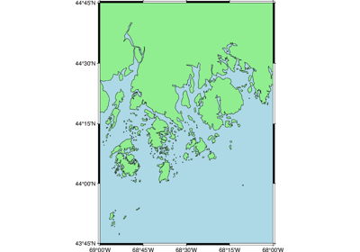
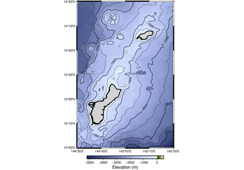

Intro to PyGMT
Welcome to PyGMT! This tutorial is designed to teach the basic concepts to make a map in PyGMT.
About this tutorial
This tutorial assumes that PyGMT has been successfully
installed. A quick way to test this is to type
import pygmt in a Python IDE or
Jupyter Notebook.
This tutorial will progressively cover PyGMT plotting concepts, and later examples will use concepts explained in previous examples. It will not cover all PyGMT methods.

1. Making your first figure

2. Create a contour map